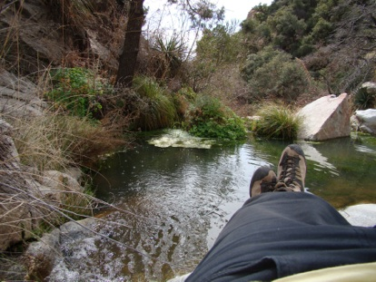

Western madness and wild nature
I know it has been a while... well only a week and a half, but I suspect that most of you have little patience when it comes to my blog - hi mom ;) The reason is that I have been quite busy working and touristing.
Since last time I wrote here I have left Santa Barbara and am now living in Tucson Arizona. Here I will stay until the 6th of march where I fly back to Germany. Before I left Santa Barbara I had one more thing to do there before I was satisfied with the tick marks on my imaginary to-do-in-the-us-list (now that I come to think of it... it think I’ll make it non-imaginary and put it in the end of this blog!). I wanted to have California sushi which should be really good.  So to ‘celebrate’ that I was leaving Santa Barbara, Phil, Emily and I went to one of the better sushi places in town and ordered a whole bunch of different things - and it was EXCELLENT! It might actually be the best sushi I have ever had... and on top of that it is not bat that you get 75 cl. when you order a large beer :)
So to ‘celebrate’ that I was leaving Santa Barbara, Phil, Emily and I went to one of the better sushi places in town and ordered a whole bunch of different things - and it was EXCELLENT! It might actually be the best sushi I have ever had... and on top of that it is not bat that you get 75 cl. when you order a large beer :)
Thursday was the last day at the institute before Phil and I started our road trip to Tucson. We picked up the rental car at around 6pm and headed of for our stop for the night, Palm Springs east of L.A. On the way we stoped at In&Out Burgers which was kind of a funny experience. The have 3 things on there menu and in the bottom of their cups they cite bibel-verses... weird! And then every In&Out burger in the US look exactly the same inside (which I realized when I saw an In&Out burger here in Tucson - and yes it looked EXACTLY as the one we ate at in California. But the burgers were great - never-frozen meat and french fries from actual potatoes - I might actually go there again before I leave. Well after we had dinner we drove to Palm Springs which took like 4 hours. Just enough for fill to win his bet with Emily, that we would be there before 11pm. We found a motel and got some rest.
And then every In&Out burger in the US look exactly the same inside (which I realized when I saw an In&Out burger here in Tucson - and yes it looked EXACTLY as the one we ate at in California. But the burgers were great - never-frozen meat and french fries from actual potatoes - I might actually go there again before I leave. Well after we had dinner we drove to Palm Springs which took like 4 hours. Just enough for fill to win his bet with Emily, that we would be there before 11pm. We found a motel and got some rest. 
We left the motel at 10ish friday morning. The first stop on our way to Tucson was Joshua Tree National Park. We arrived their approximately an hour after we had left Palm Springs. JTNP is situated in the south californian desert and is (as it’s name says) known for it’s Joshua Trees. A weird looking tree with pon-pons as leaves... or something like that. There were also a lot of cacti and cool rock formations to look at so we spent around 3 hours driving through JTNP with multiple stops on the way.
After JTNP we had good 4 hours on the road before we arrived to Phoenix. The ride was actually not that long. We had good music and a lot to talk about so the time flew by, as well as the empty desert landscape of Arizona. Not the most inspiring, but still cool to experience. When we arrived at Phoenix it was 7pm (which actually became 8pm because of the time difference which we weren’t really aware of) and we stopped for diner. We found a restaurant called Crazy Buffet with all you could eat in chinese/japanese food which was okay.
When we arrived at Phoenix it was 7pm (which actually became 8pm because of the time difference which we weren’t really aware of) and we stopped for diner. We found a restaurant called Crazy Buffet with all you could eat in chinese/japanese food which was okay.  After dinner we only had 3 small hours left on the road and Phil dropped me off at the Max Planck guest house in Tucson at around 10pm. I went to bed as soon as I figured out where to sleep so I was fresh and ready for saturday which was dedicated to tourism whit Phil.
After dinner we only had 3 small hours left on the road and Phil dropped me off at the Max Planck guest house in Tucson at around 10pm. I went to bed as soon as I figured out where to sleep so I was fresh and ready for saturday which was dedicated to tourism whit Phil.
Phil picked me up at 8 in the morning and we found a diner to get some breakfast. Our goal of the day was to see the Desert Museum which we had been recommended as THE thing to see in Tucson, See The Saguaro National Park and then a squeeze of western by visiting Tombstone, so we had plenty to do.
Our goal of the day was to see the Desert Museum which we had been recommended as THE thing to see in Tucson, See The Saguaro National Park and then a squeeze of western by visiting Tombstone, so we had plenty to do.
The Desert Museum was not really a museum.  More like a zoo/park were they showed the animals who lived in the various kinds of desert landscapes that exists (or existed) around Tucson. It was pretty interesting even though most of the animals can be seen in any zoo around the world - but here they were in there ‘real’ element. The Desert Museum were only a couple of minutes from the (west part) of The Saguaro National Park. SNP is like JTNP
More like a zoo/park were they showed the animals who lived in the various kinds of desert landscapes that exists (or existed) around Tucson. It was pretty interesting even though most of the animals can be seen in any zoo around the world - but here they were in there ‘real’ element. The Desert Museum were only a couple of minutes from the (west part) of The Saguaro National Park. SNP is like JTNP 
a preserved piece of nature wish is really astonishing to drive through. The main attraction in SNP is the Saguaro cacti, which are the huge green cacti from all the desert cartoons like Lucky Luke and Wile E. Coyote & Roadrunner - they are pretty incredible (the cacti that is).
After having seen that we drove 1-2 hours south of Tucson, 30 miles from the Mexican boarder to Tombstone - THE western town. We were told not to go there because it has become a tourist trap. But since we are boys, were out on a ‘tourist-raid’ and were in the mood for a gun fight, we decided to go their despite the bad recommendations. Just to make it clear; I was NOT disappointed! - maybe because I had the right expectations, ‘cause it is really a tourist trap. Well we went there and bought the ‘tourist-ticket’ so we got a ‘historama’ in sound and picture and got to see a staged gun fight - the famous gun fight at O.K. Corral.

After we had seen the gun fight we went up and down the dirt road just to end up at on of the original saloons where wee ordered a beer and a whiskey - what more can you wish for?
We were back at the Max Planck house around 19 where Hans-Walter and his wife were ready with a lit barbecue.
Sunday morning Hans-Walter and his wife asked me to join them on a hike. luckily I could borrow a pair of Hans-Walter’s old boots (sneakers don’t really work in the mountains of Arizona. We spend most of the day, i.e., 6 hours hiking up a canyon on the northern side of town.
luckily I could borrow a pair of Hans-Walter’s old boots (sneakers don’t really work in the mountains of Arizona. We spend most of the day, i.e., 6 hours hiking up a canyon on the northern side of town.


The nature was really incredible in the canyon. Much more lively than you would expect in a desert (which might have to do with the increasing hight above sea level...).  Actually I saw my first water fall - not a very big one - but still! A bit ironic to see my first water fall in the desert :) When we came back we went out for dinner with Phil at a Mexican restaurant; they really know how to cook good mexican food here - which is not that weird taking the distance to the mexican boarder into consideration...
Actually I saw my first water fall - not a very big one - but still! A bit ironic to see my first water fall in the desert :) When we came back we went out for dinner with Phil at a Mexican restaurant; they really know how to cook good mexican food here - which is not that weird taking the distance to the mexican boarder into consideration...
Since sunday I have mostly been working. Yesterday Phil and I went out for one last dinner (he left for Santa Barbara earlier today). We found a good american place were I ordered Meatloaf with mashed potatoes and gravy - nice:) The service was quite good, even though they made me feel like a teenager. When I ordered a beer for my dinner they asked for my ID, which is in itself not weird; they do that a lot over here. But when the waitress came back and told me that my danish drivers license was not enough (so far is has been fine) and they wanted to see my passport, I had no other choice than ordering a Coke for my dinner since I didn’t bring my passport - bummer! But the Meatloaf was still excellent ;)
But when the waitress came back and told me that my danish drivers license was not enough (so far is has been fine) and they wanted to see my passport, I had no other choice than ordering a Coke for my dinner since I didn’t bring my passport - bummer! But the Meatloaf was still excellent ;)
As mentioned above I have this imaginary (which as of now is not imaginary any longer) to-do-list that I have tried to get 100% tick marked. But I still have over a week left here, so if any of you have any suggestion for more to-do items on my list, feel free to give me a hint!
TO-DO-IN-THE-US-LIST:
✓ Taste Dr. Pepper
✓ Taste Root Beer
✓ Have a good american steak
✓ Eat at In&Out burger
- See a baseball/basketball match
✓ Have ‘a set’ in a western saloon
✓ Swim in the Pacific
✓ Have breakfast at a American diner
- Eat at Taco Bell
✓ Taste beef jerky
- ...
Yeah I know that most of it concerns food - but you know me;)
I think this was it for now.
Cheers
Kasper
Oh by the way. This is the weather forecast for Tucson - just if you were curious...


Even more touristing...
Thursday, 26 February 2009
